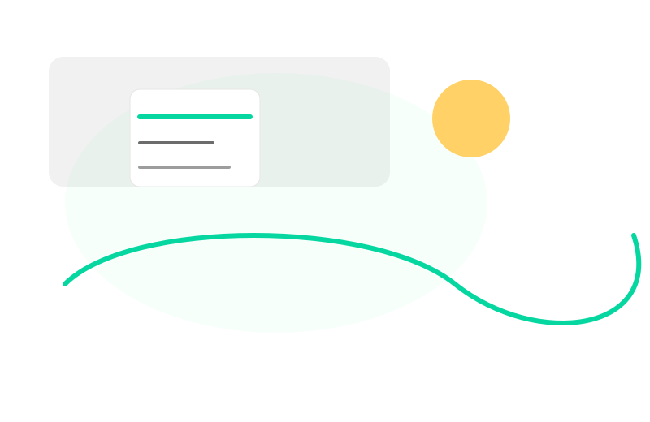

Signal Mapping
Identify simple, measurable daily signals that reflect real progress.
Hi, I’m {{COACH_NAME}} {{CREDENTIALS}}. I design simple habit systems and membership paths that help busy people make measurable progress—without fads or overwhelm.
Free downloadable framework: "Small Signals — 7-day habit tracker" available for new members.

We cut through common wellness lore using practical experiments and measurable signals.
Change requires a dramatic overhaul — new diet, intense routine, immediate transformation.
Tiny consistent habits compound. Small signals tracked over weeks are the most reliable predictor of progress.
Curious? Explore our membership Paths to find a framework that fits your schedule: View Paths.
Each pillar is a repeatable module we use inside memberships and short coaching engagements.
Identify simple, measurable daily signals that reflect real progress.
Design 3–5 minute routines that anchor bigger habits to existing day structure.
Run short trials, measure response, refine. Decisions come from data, not anecdotes.
Want the frameworks adapted to your life? See membership details: Membership Paths.
Short, focused examples of what our structured approach produces inside memberships.
Built a morning micro-routine that increased consistent movement from 0 to 5x/week. The emphasis was on signal tracking, not intensity.
Read the full storyWe aligned evening cues and reduced variability in sleep timing by 40% using incremental behavioral experiments.
Read the full storyIntroduced 3 daily micro-checks and a weekly reflection. The member reported greater agency over habitual reactions.
Read the full storyHave another question? Reach out via email or book a discovery call.
Monthly cohorts, structured experiments, and a supportive community. Memberships start with a 30-day orientation and clear signal metrics.